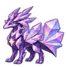

No.022
アストリス
晶 希少
四つの灯が巡る場所に現れる、星環の守り手。古い旅の記憶を守っている。
基本データ
| 図鑑番号 | No.022 |
|---|---|
| タイプ | 晶タイプ |
| 進化 | 進化しない |
| 入手方法 | 星環の遺跡（Lv.15〜18）、白夜島（Lv.26〜29）の草むらに出現。 |
Lv.50の能力値
| 体力 | 298 | |
|---|---|---|
| 物理攻撃 | 175 | |
| 物理防御 | 124 | |
| 特殊攻撃 | 173 | |
| 特殊防御 | 127 | |
| 素早さ | 120 | |
| 命中 | 99 | |
| 回避 | 96 |
冒険中の能力値はレベルに応じて上がります。オンライン対戦の通常レンタルはLv.50で統一されます。
覚える技
| 技 | タイプ | 分類 | 威力 | 命中 | PP | 効果 |
|---|---|---|---|---|---|---|
| 月輪の断面 | 晶 | 物理 | 42 | 90 | 10 | 晶の力で打ち込む強力な物理攻撃。6%で結晶化にすることがある。 |
| 鏡面の刃 | 晶 | 物理 | 30 | 97 | 20 | 晶の力で守りを貫く物理攻撃。防御の技による軽減を受けない。6%で結晶化にすることがある。 |
| 炉心の和音 | 灯 | 物理 | 33 | 96 | 15 | 灯の力を込めた物理攻撃。威力と命中のバランスがよい。10%で灯焼けにすることがある。 |
| 結晶のまもり | 晶 | 防御 | — | — | 15 | 晶の守りで、次に受ける攻撃のダメージを半分にする。素早さに関係なく先に構える。 |
タイプ相性
晶タイプの技は風タイプに強く（1.5倍）、風タイプの技を受けると効果が大きくなります。同じタイプの技を使うと威力が1.15倍になります。